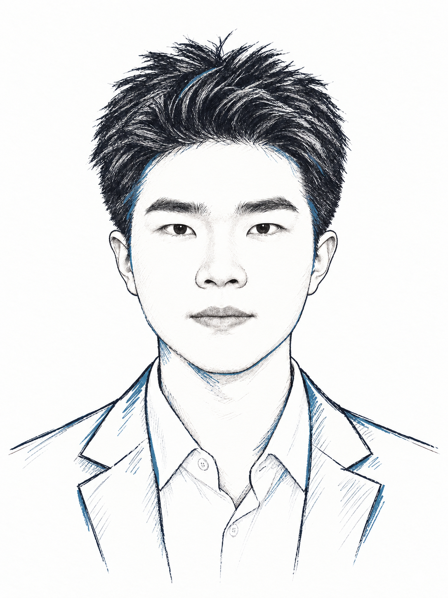

Central University of Finance and Economics中央财经大学
School of Information信息学院
Undergraduate · Computer Science and Technology · Minor in Finance本科 · 计算机科学与技术 · 辅修金融学
2023 — 2027
Expected graduation June 2027预计于 2027 年 6 月毕业

徐守正Shouzheng Xu
Into the Unexplored探未至之境
I am a fourth-year undergraduate at the Central University of Finance and Economics, where I major in Computer Science and Technology and minor in Finance, under the supervision of Yue Wang.我是中央财经大学计算机科学与技术专业的大四本科生，辅修金融学，导师为 王悦老师。
I will be joining the School of Computer Science at Shanghai Jiao Tong University as a Ph.D. student under the supervision of Xiaobao Wu.我将赴上海交通大学计算机学院攻读博士学位，在 吴小宝老师的指导下学习与研究。
My research interests center on LLM and agent systems. More broadly, I am interested in AI-related topics in general. If you are interested in potential collaborations or would like to discuss anything, please feel free to reach out via email. Here is my CV.我的研究兴趣主要围绕大语言模型与智能体系统，也广泛关注人工智能相关问题。欢迎通过邮件交流研究想法、探讨合作。这里是我的简历。
School of Information信息学院
Undergraduate · Computer Science and Technology · Minor in Finance本科 · 计算机科学与技术 · 辅修金融学
2023 — 2027
Expected graduation June 2027预计于 2027 年 6 月毕业
School of Computer Science计算机学院
Incoming Ph.D. student · Computer Science and Technology拟入学博士生 · 计算机科学与技术
2027 — Incoming2027 — 即将入学
Starting September 2027将于 2027 年 9 月入学
CIKM 2026 · Accepted已录用
Shouzheng Xu*, Zonglin Feng*, Yunqi Zhou, Yaqing Li, Jingyi Wu
Paper PDF ↗论文 PDF ↗WISE 2026 · Accepted已录用
Zonglin Feng*, Shouzheng Xu*, Qicheng Zhao
Paper PDF ↗论文 PDF ↗2025
Developed under the supervision of Xu Yang, a researcher at Microsoft Research Asia.在微软亚洲研究院研究员 Xu Yang 的指导下开展。
An end-to-end RAG system over 100,000+ domain documents, combining BM25, FAISS, and Neo4j retrieval with a multi-agent framework for complex policy questions.面向十万余份领域文档构建端到端 RAG 系统，融合 BM25、FAISS 与 Neo4j 检索，并通过多智能体协作处理复杂政策问题。
Released at the second National Digital Economy Academic Conference and featured in Guangming Daily.成果于第二届全国数字经济学术年会发布，获《光明日报》报道。
ICPC Asia Regional Contest · Bronze MedalICPC 亚洲区域赛 · 铜奖
2025
“Bangyang Zhongcai” Recognition · Team Member“榜样中财”称号 · 团队成员
2025
President · Sep 2025 – Aug 2026社长 · 2025 年 9 月 — 2026 年 8 月
Founded CUFE’s student technology club and served as its president, with faculty guidance from Yan Wang and Yimin He. We organized programming activities and competitions and contributed to mini programs for anti-fraud and township information services, as well as other campus information projects.创办中央财经大学 Cyber 先锋社并担任社长，指导老师为 王焱和 Yimin He。我们组织编程活动与竞赛，参与反诈、乡镇信息服务小程序开发及其他校园信息化项目。
Contact联系
xu.shouzheng@email.cufe.edu.cn ↗